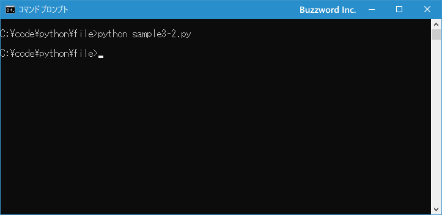

テキストファイルへ書き込む
Python を使ってローカルに保存されているテキストファイルを開き、ファイルへテキストを書き込む方法について解説します。ファイルへの書き込みは上書きで書き込んだり、ファイルの最後に追加する形で書き込んだりすることができます。
書き込み用にファイルを開く
テキストファイルへ書き込むためにファイルを開く場合、 open 関数のモードとして "w" "a" "x" のいずれかを指定して次のように実行します。
f = open('myfile.txt', 'w')
f = open('myfile.txt', 'a')
f = open('myfile.txt', 'x')
"w" を指定した場合、対象のファイルが存在していない場合は新規に作成して書き込みます。ファイルが存在していた場合は、ファイルに上書きで書き込みます(元々ファイルに入っていた内容はすべてクリアされます)。
"a" を指定した場合、対象のファイルが存在していない場合は新規に作成して書き込みます。ファイルが存在していた場合は、ファイルに元々入っていた内容はそのままで、最後に追加する形で書き込みます。
"x" を指定した場合、対象のファイルが存在していない場合は新規に作成して書き込みます。ファイルが存在していた場合は、 FileExistsError が発生します。
f = open('myfile.txt', 'x')
>> FileExistsError: [Errno 17] File exists: 'myfile.txt'
開こうとするファイルの文字エンコーディングが、ご自身の環境のデフォルトエンコーディングと異なる場合には、文字エンコーディングを指定します。
f = open('myfile.txt', 'w', encoding='UTF-8')
上書きで書き込む(wモード)
"w" モードでファイルに書き込みを行います。ファイルが存在しなければ新規に作成し、ファイルが既に存在している場合は上書きで書き込みます。
f = open('myfile.txt', 'w')
ファイルに対してテキストを書き込むには write メソッドを使用します。
write(s)
引数にファイルに書き込む文字列を指定します。
具体的には次のように記述します。
f = open('myfile.txt', 'w')
f.write('こんにちは\n')
f.close()
write メソッドは自動的には最後に改行を書き込みませんので、必要であれば '\n' を合わせて書き込んでください。
デフォルトでは '\n' を書き込むと自動的に利用しているプラットフォームに合わせて改行が書き込まれます。例えば macOS の場合は '\r' が書き込まれ、 Windows の場合は '\r\n' が書き込まれます。
また複数の文字列をまとめてファイルに書き込む場合には writelines メソッドを使用します。
writelines(lines)
引数には文字列を要素としてリストを指定します。リストに追加されている要素を順番にファイルに書き込みます。
具体的には次のように記述します。
f = open('myfile.txt', 'w')
datalist = ['こんにちは\n', 'お元気ですか？\n', 'それではまた\n']
f.writelines(datalist)
f.close()
writelines メソッドは自動的には最後に改行を書き込みませんので、必要であれば要素に格納する文字列に '\n' を加えてください。
"w" モードの場合、ファイルが存在していても上書きで書き込みますので、既存のファイルの文字エンコーディングが何であっても、ファイルを書き込むときに指定した文字エンコーディングを使ってファイルに書き込まれます。文字エンコーディングが異なっていてもエラーとはなりません。
それでは簡単なサンプルプログラムを作って試してみます。テキストエディタで次のように記述したあと、 sample3-1.py という名前で保存します。
f = open('myfile.txt', 'w', encoding='UTF-8')
f.write('こんにちは\n')
datalist = ['お元気ですか？\n', 'それではまた\n']
f.writelines(datalist)
f.close()
その後で、次のように実行してください。
python sample3-1.py
今回は myfile.txt が既に存在していたので、ファイル myfile.txt を開き、ファイルに対してテキストを上書きで書き込みました。そのあとでファイルオブジェクトを閉じています。
プログラムを実行したあとに、プログラムがある同じディレクトリに myfile.txt というファイルが作成されます。ファイルの中身を確認すると次のように書き込まれていました。
こんにちは お元気ですか？ それではまた
追加で書き込む(aモード)
"a" モードでファイルに書き込みを行います。ファイルが存在しなければ新規に作成し、ファイルが既に存在している場合は既存の内容はそのままでファイルの最後に追加で書き込みます。
f = open('myfile.txt', 'a')
ファイルに書き込むには w モードと同じく write メソッド、または writelines メソッドを使います。
具体的には次のように記述します。
f = open('myfile.txt', 'a')
f.write('こんにちは\n')
datalist = ['お元気ですか？\n', 'それではまた\n']
f.writelines(datalist)
f.close()
なお既存のファイルに対して追加で書き込みを行う場合、既存のファイルの文字エンコーディングと、書き込みに使用する文字エンコーディングが異なっていると、 write メソッドを実行したときエラーは発生しませんが文字化けになりますのでご注意ください。
それでは簡単なサンプルプログラムを作って試してみます。テキストエディタで次のように記述したあと、 sample3-2.py という名前で保存します。
f = open('myfile.txt', 'a', encoding='UTF-8')
f.write('それではまた\n')
f.close()
プログラムがある同じディレクトリに myfile.txt というファイルを作成し、次のようにテキストを入力しておきました。エンコーディングは UTF-8 で保存しました。
こんにちは お元気ですか？
その後で、次のように実行してください。
python sample3-2.py

今回は myfile.txt が既に存在していたので、ファイル myfile.txt を開き、ファイルの最後に追加で書き込みました。そのあとでファイルオブジェクトを閉じています。
プログラムを実行したあとに、 myfile.txt ファイルの中身を確認すると次のように書き込まれていました。
こんにちは お元気ですか？ それではまた
ファイルが存在していない場合に書き込む(xモード)
"x" モードでファイルに書き込みを行います。ファイルが存在しなければ新規に作成して書き込みますが、ファイルが存在していた場合はエラーとなります。
f = open('myfile.txt', 'x')
ファイルに書き込むには w モードと同じく write メソッド、または writelines メソッドを使います。
具体的には次のように記述します。
f = open('myfile.txt', 'x')
f.write('こんにちは\n')
datalist = ['お元気ですか？\n', 'それではまた\n']
f.writelines(datalist)
f.close()
存在しているファイルに対して x モードで書き込みを行うと open 関数を実行した時点で FileExistsError が発生します。
f = open('myfile.txt', 'x')
>> FileExistsError: [Errno 17] File exists: 'myfile.txt'
それでは簡単なサンプルプログラムを作って試してみます。テキストエディタで次のように記述したあと、 sample3-3.py という名前で保存します。
f = open('myfile.txt', 'x', encoding='UTF-8')
f.write('こんにちは\n')
datalist = ['お元気ですか？\n', 'それではまた\n']
f.writelines(datalist)
f.close()
その後で、次のように実行してください。
python sample3-3.py
今回は myfile.txt が存在していない状態でプログラムを実行しています。 myfile.txt を新規に作成したあとで開き、ファイルに対してテキストを上書きで書き込みました。そのあとでファイルオブジェクトを閉じています。
プログラムを実行したあとに、プログラムがある同じディレクトリに myfile.txt というファイルが作成されます。ファイルの中身を確認すると次のように書き込まれていました。
こんにちは お元気ですか？ それではまた
-- --
Python を使ってローカルに保存されているテキストファイルを開き、ファイルへテキストを書き込む方法について解説しました。
( Written by Tatsuo Ikura )

著者 / TATSUO IKURA
初心者～中級者の方を対象としたプログラミング方法や開発環境の構築の解説を行うサイトの運営を行っています。